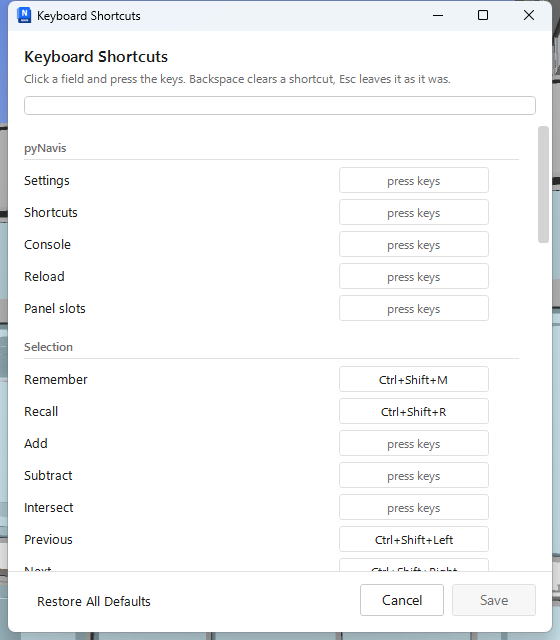

pyNavis panel
Shortcuts
The keyboard shortcut editor: every tool that can carry a chord, the chord it has now, and a field to press a new one into.
On the ribbonButton, pyNavis panel
NeedsNothing
What it does#
Every pyNavis tool can have a keyboard shortcut, and the shipped tools come with a few
already bound. This editor lists all of them, searchable, and lets you change, clear or
restore any of them. Your changes are stored in config.json and the tools' own
defaults are never touched, so a Reset always has something to go back to.

How to use it#
- Click Shortcuts. Type in the search box to narrow the list.
- Click the field on a row and press the keys you want, for example Ctrl+Shift+F. The field shows the chord and the row's badge reads "custom".
- Backspace in a field clears the binding so the tool has none. Esc leaves the field as it was.
- A chord already used by another tool is flagged on the row, naming the tool that has it, so you can decide which one keeps it.
- Each row has a Reset that returns it to the tool's own default, and one action at the bottom restores every default at once.
- Click Save. The ribbon reloads so the new chords are live straight away, and a toast confirms it.
Limitations#
- A chord always runs the tool's primary action, never its Shift+Click settings.
- Chords fire when the 3D view or the ribbon has focus. A dialog with a text box takes the keys for itself, as it should.
- Unless allowed in Settings, a chord must include Ctrl or Alt. Navisworks and some graphics drivers claim a few chords for themselves; if a chord never fires, rebind it.
- The two dock panels, Viewpoint Tracker and Section Nudge, take a keytip rather than a chord, so they are not listed.
Other uses#
- Switch off a chord you keep hitting by accident rather than living with it.
- The six Section Nudge chords live here too, under their Nudge titles, which is how you move them off Ctrl+Alt on a machine where the display driver owns those keys.
Good to know#
Bindings are keyed by the tool's folder path, so a tool that moves to another panel loses its override and goes back to its default. The shipped tools do not move between releases.